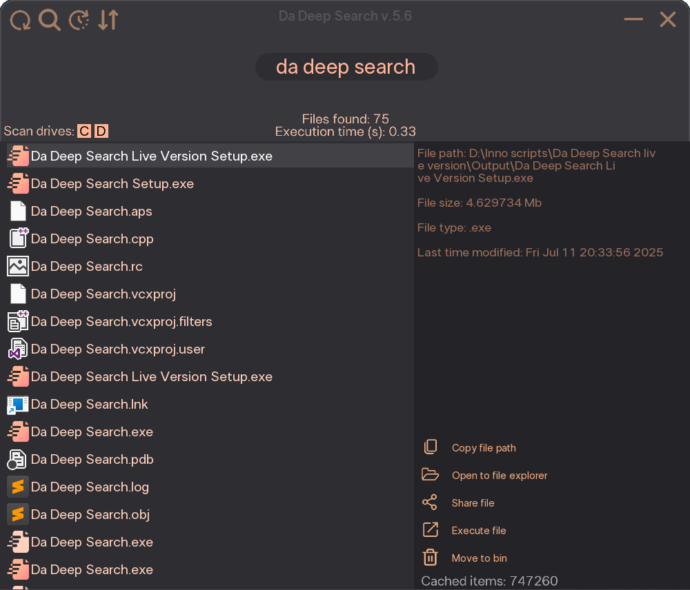
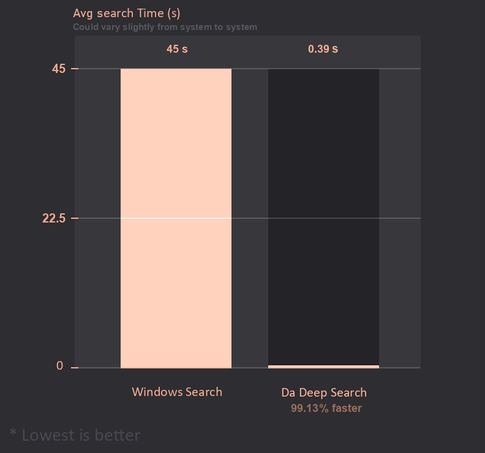

Da Deep Search üîé
Home
Download
Donate
Feedback
Source-Code
Overview
Da Deep Search is a minimal, high performance file exploration tool made for fast file discovery on your Windows PC. It's a better alternative to the default Windows Search, designed to feel part of the operating system itself! It offers quick access to files and provides detailed information such as file name, size, path, and more.
Features:
✔️ Portable software
✔️ Automatic updates
✔️ Wide file system compatibility
✔️ Smart file search
✔️ Ultra fast file search
✔️ Threaded file search
✔️ Extended file info
✔️ File execution and other quick actions
üìñ See more
⬇️ Download
üçµ Donate

About Da Deep Search
Easy
Da Deep Search is super easy to use. Run the .exe file and press LCtrl + Space to bring it up!
Fast
Da Deep Search is a threaded application, made in C++20 that constantly receives optimization updates!
Cross-platform
Da Deep Search reads files reliably across a wide variety of file system formats like NTFS and FAT32!
Open-Source
Da Deep Search version 2.1_2 source code and below, is available to everyone to modify!

How to use Da Deep Search
Press LCtrl + Space to open / close the window.
Select the drives you want to scan, in the left corner.
Type the name of the file you want to find instantly.